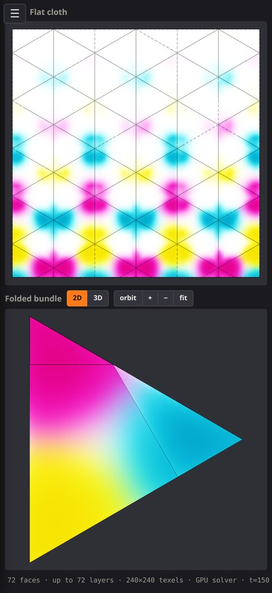
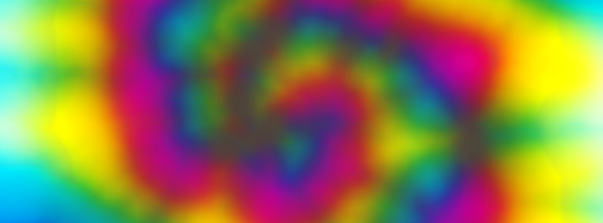
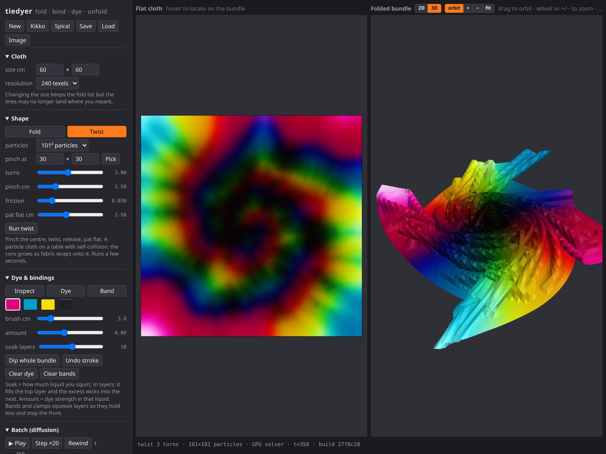

See the shirt before you unfold it.
Fold or twist the cloth, put on the bands, squirt the dye. Tie Dyer works out where the colour goes, layer by layer, and shows you the pattern you'll get.


Fold it the way you would on the table
Accordion pleats, zigzags, diagonals, or draw your own fold lines. Spiral mode pinches the centre and twists a simulated cloth until it gathers. Every layer is tracked, so you can see exactly what a squirt will reach.
Dye that soaks, wicks and stops at the band
Choose how much you squirt, in layers of cloth. The liquid fills the top layer, the excess wicks into the next, and the colour spreads along the fabric. Rubber bands and clamps squeeze the stack and hold the front back.
Both views, one touch
The folded bundle and the unfolded pattern update together. Touch a point on the pattern to see where it sits in the bundle, or the other way round. Switch to 3D to orbit the bundle and dye it from any side.
How a pattern happens
- FoldPick a preset or draw fold lines. The bundle shows the stack you'd be holding.
- BandDrag a rubber band across the bundle. It squeezes the layers so less dye gets through.
- DyeSquirt from the top or bottom, or dip the whole bundle. Then let it batch.
- UnfoldThe pattern was there all along. Change a fold or a colour and watch it move.

Save a plan and reload it later, or export the pattern as an image. Everything runs on the device. No account, no network, nothing collected.